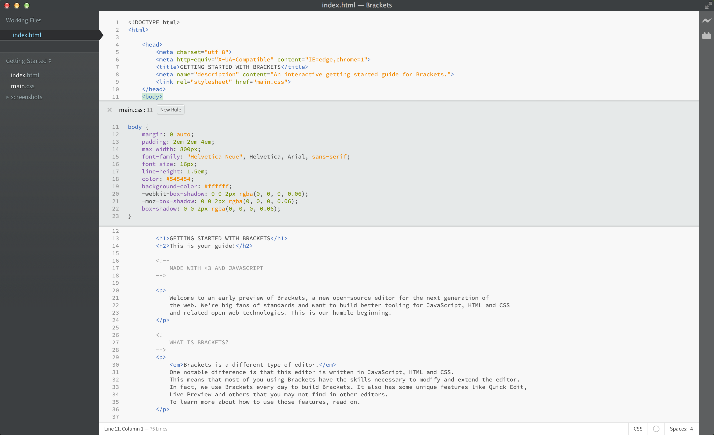

Hi, I’m Mike. I’m Rowan University graduate with a bachelor’s degree in geography with a minor in geographic information systems and urban planning.
I currently work as a GIS Analyst at Metro Commercial Real Estate. The goal of this website is to to be a playground of sorts for me to teach myself web development!
Well, kind of. We haven't recorded or played much. But I'm working on it, so get off my back. I'll be dropping a fire mixtape within a year, so K.Y.E.O.
Once you're ready to get out of this sample project and edit your own code, you can use the dropdown in the left sidebar to switch folders. Right now, the dropdown says "Getting Started" - that's the folder containing the file you're looking at right now. Click on the dropdown and choose "Open Folder…" to open your own folder. You can also use the dropdown later to switch back to folders you've opened previously, including this sample project.No more switching between documents and losing your context. When editing HTML, use the Cmd/Ctrl + E shortcut to open a quick inline editor that displays all the related CSS. Make a tweak to your CSS, hit ESC and you're back to editing HTML, or just leave the CSS rules open and they'll become part of your HTML editor. If you hit ESC outside of a quick inline editor, they'll all collapse. Quick Edit will also find rules defined in LESS and SCSS files, including nested rules.
Want to see it in action? Place your cursor on the tag above and press Cmd/Ctrl + E. You should see a CSS quick editor appear above, showing the CSS rule that applies to it. Quick Edit works in class and id attributes as well. You can use it with your LESS and SCSS files also. You can create new rules the same way. Click in one of the tags above and press Cmd/Ctrl + E. There are no rules for it right now, but you can click the New Rule button to add a new rule for . You can use the same shortcut to edit other things as well - like functions in JavaScript, colors, and animation timing functions - and we're adding more and more all the time.
For now inline editors cannot be nested, so you can only use Quick Edit while the cursor is in a "full size" editor.
You know that "save/reload dance" we've been doing for years? The one where you make changes in your editor, hit save, switch to the browser and then refresh to finally see the result? With Brackets, you don't have to do that dance.
Brackets will open a live connection to your local browser and push HTML and CSS updates as you type! You might already be doing something like this today with browser-based tools, but with Brackets there is no need to copy and paste the final code back into the editor. Your code runs in the browser, but lives in your editor!
Brackets makes it easy to see how your changes in HTML and CSS will affect the page. When your cursor is on a CSS rule, Brackets will highlight all affected elements in the browser. Similarly, when editing an HTML file, Brackets will highlight the corresponding HTML elements in the browser.
If you have Google Chrome installed, you can try this out yourself. Click on the lightning bolt icon in the top right corner of your Brackets window or hit Cmd/Ctrl + Alt + P. When Live Preview is enabled on an HTML document, all linked CSS documents can be edited in real-time. The icon will change from gray to gold when Brackets establishes a connection to your browser. Now, place your cursor on the tag above. Notice the blue highlight that appears around the image in Chrome. Next, use Cmd/Ctrl + E to open up the defined CSS rules. Try changing the size of the border from 10px to 20px or change the background color from "transparent" to "hotpink". If you have Brackets and your browser running side-by-side, you will see your changes instantly reflected in your browser. Cool, right?Today, Brackets only supports Live Preview for HTML and CSS. However, in the current version, changes to JavaScript files are automatically reloaded when you save. We are currently working on Live Preview support for JavaScript. Live previews are also only possible with Google Chrome, but we hope to bring this functionality to all major browsers in the future.
For those of us who haven't yet memorized the color equivalents for HEX or RGB values, Brackets makes it quick and easy to see exactly what color is being used. In either CSS or HTML, simply hover over any color value or gradient and Brackets will display a preview of that color/gradient automatically. The same goes for images: simply hover over the image link in the Brackets editor and it will display a thumbnail preview of that image.
To try out Quick View for yourself, place your cursor on the tag at the top of this document and press Cmd/Ctrl + E to open a CSS quick editor. Now simply hover over any of the color values within the CSS. You can also see it in action on gradients by opening a CSS quick editor on the tag and hovering over any of the background image values. To try out the image preview, place your cursor over the screenshot image included earlier in this document.In addition to all the goodness that's built into Brackets, our large and growing community of extension developers has built hundreds of extensions that add useful functionality. If there's something you need that Brackets doesn't offer, more than likely someone has built an extension for it. To browse or search the list of available extensions, choose File > Extension Manager… and click on the "Available" tab. When you find an extension you want, just click the "Install" button next to it.
Brackets is an open-source project. Web developers from around the world are contributing to build a better code editor. Many more are building extensions that expand the capabilities of Brackets. Let us know what you think, share your ideas or contribute directly to the project.